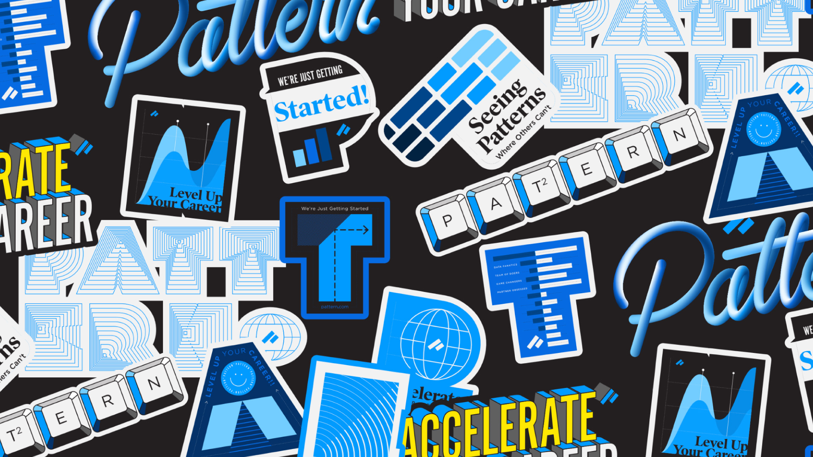
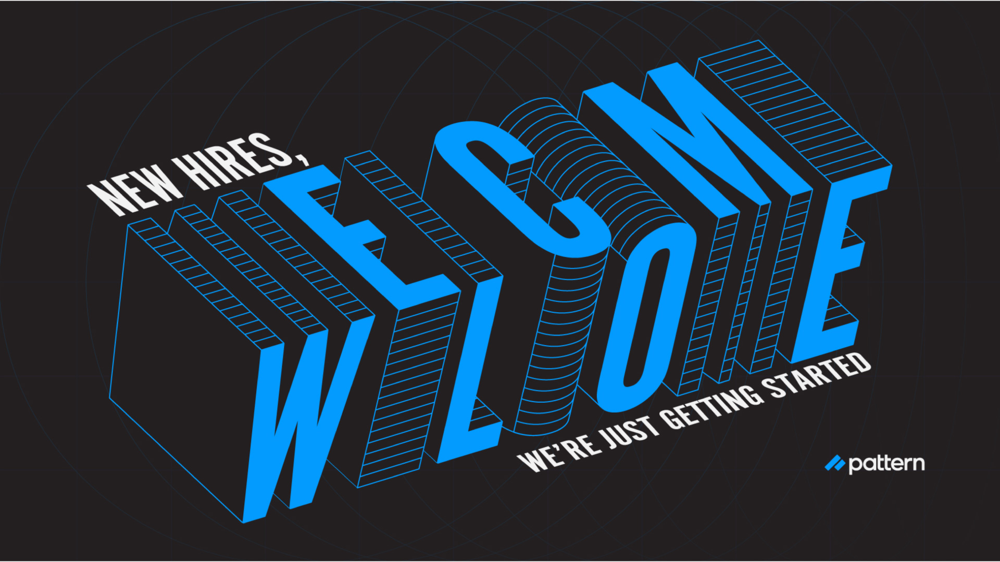
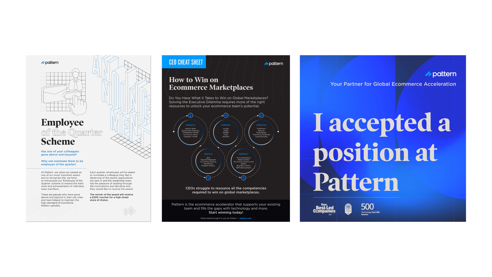
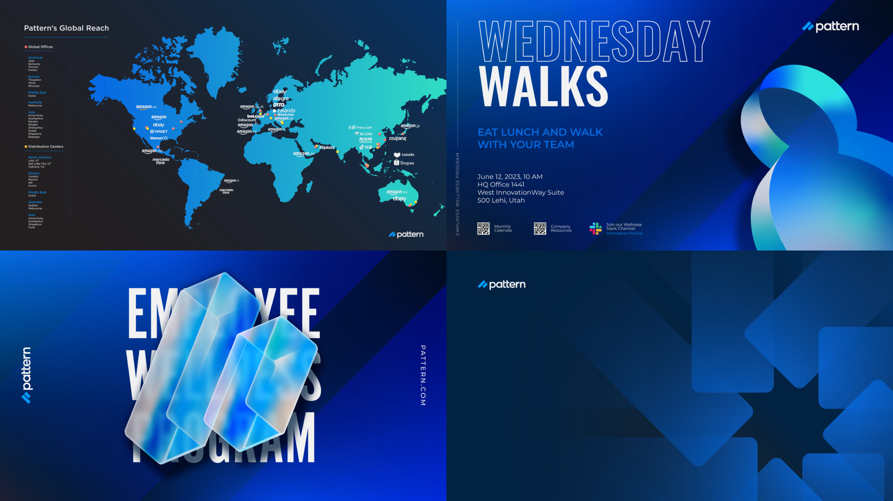
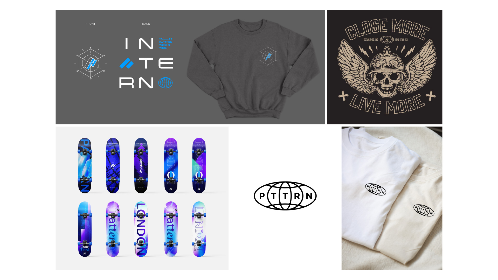
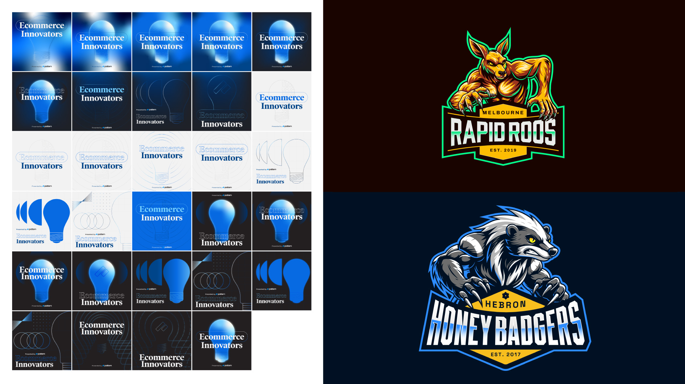

Brand Designer for the Brand Team
Pattern is a fast-moving brand that demands a high volume of quality creative across every surface. As part of the Brand Team, the work spanned the full breadth of brand touchpoints, from print to office interior design, merchandise, social media, blog headers, and digital applications.
Every deliverable was executed with the same level of care and intentionality. The challenge was maintaining brand consistency while keeping the creative fresh. Each project required a strong understanding of the brand system and the judgment to push it forward without losing coherence.
A sustained body of work that helped Pattern show up consistently and confidently across every brand touchpoint. The breadth of the engagement is a testament to the trust built through reliable, high-quality creative execution.






